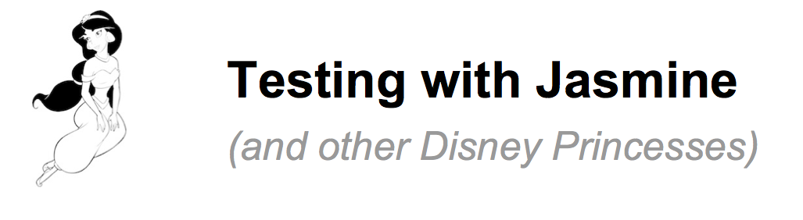
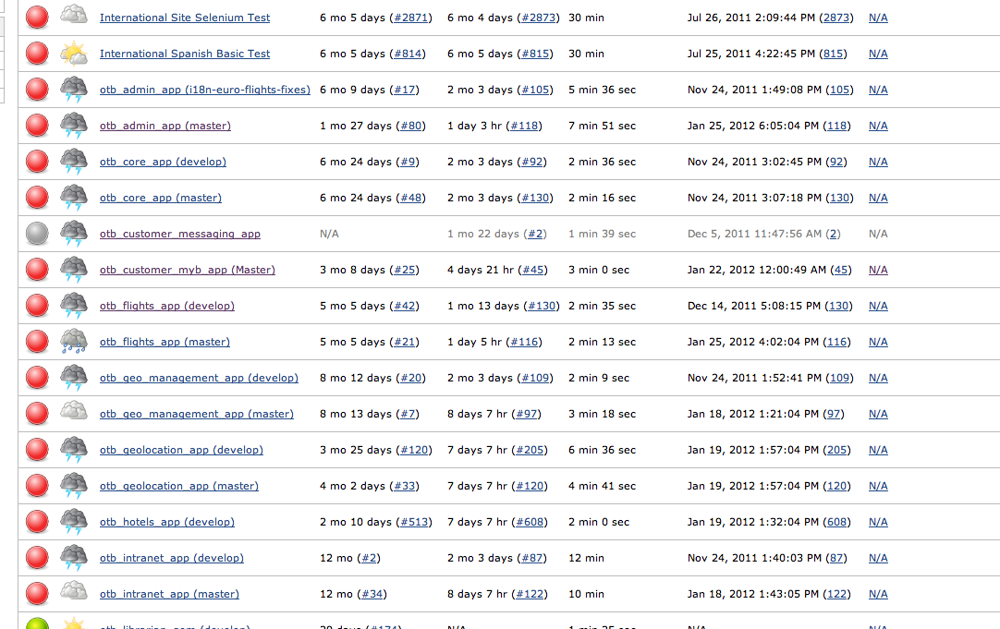

* Yes, I know it's Jenkins now...
JavaScript is code. Therefore: let's unit-test it.
Sean Handley (about 2 seconds ago)
...
gem 'jasmine'
...
$ bundle install
$ jasmine init
+ spec/
+ javascripts/
+ fixtures/
- awesome.html
+ helpers/
- jasmine-jquery.js
- my_awesome_page_spec.js
+ support/
- jasmine.yml
- jasmine_config.rb
- jasmine_runner.rb
src_files:
- public/javascripts/jquery.min.js
- public/javascripts/my_awesome_page.js
stylesheets:
- stylesheets/**/*.css
helpers:
- helpers/jasmine-jquery.js
spec_files:
- '**/*[sS]pec.js'
src_dir: '/'
spec_dir: spec/javascripts
$ rake jasmine # launches server
$ rake jasmine:ci # launches tests as a non-interactive job
describe("my_awesome_page", function() {
beforeEach(function() {
loadFixtures("awesome.html");
});
describe("#change_status(status)", function() {
it("should change the status message", function() {
expect($('div#awesome').text()).toNotEqual("Awesome!");
change_status('Awesome!');
expect($('div#awesome').text()).toEqual("Awesome!");
});
});
});
<div id="awesome"></div>
function change_status(status){
$('div#awesome').append(status);
}
The main Jasmine page - http://pivotal.github.com/jasmine/
The jasmine-jquery helper - https://github.com/velesin/jasmine-jquery
/